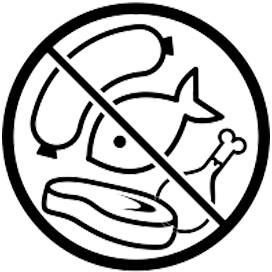
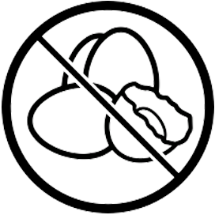
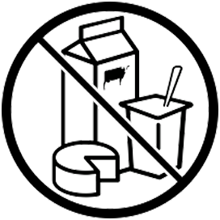

Não consomem nenhum tipo de carne (nem frango, peixe ou frutos do mar), mas consomem laticínios e ovos.
Além de não consumir nenhum tipo de carne – como os ovolactovegetarianos -, os lactovegetarianos excluem também os ovos da dieta.
Não consomem nenhum tipo de carne, laticínios ou ovos em sua alimentação.

Por motivações éticas, não consomem nada de origem animal em nenhuma área de suas vidas. Alimentação, vestuário, espetáculos ou qualquer outro tipo de atividade que envolva sofrimento animal é excluída da vida de uma pessoa vegana